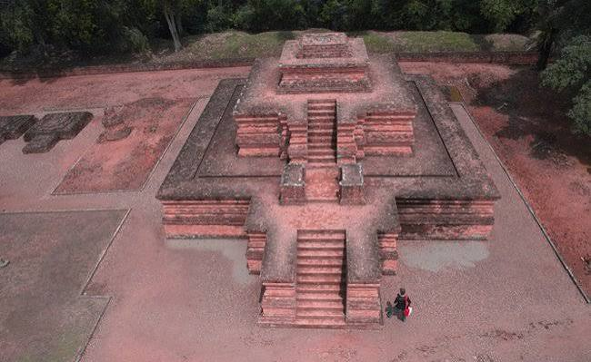

JambiKerajinan
Batik Jambi
Kain batik dengan motif yang terinspirasi alam dan sejarah setempat, misalnya motif Batanghari, Angso Duo, dan Kapal Sanggat.
Jambi, kota di tepi Sungai Batanghari tempat saya tumbuh dan tempat banyak cerita bermula.

Jambi adalah sebuah provinsi di bagian tengah Pulau Sumatra dengan Kota Jambi sebagai ibu kotanya. Kota ini berkembang di sepanjang Sungai Batanghari, sungai terpanjang di Sumatra, yang sejak dahulu menjadi jalur perdagangan dan kehidupan masyarakatnya.
Semboyan daerahnya adalah "Sepucuk Jambi Sembilan Lurah", yang menggambarkan wilayah Jambi yang dialiri banyak sungai dan dihuni beragam kelompok masyarakat.
Ibu Kota
Sungai Utama
Pulau
Semboyan
Kain batik dengan motif yang terinspirasi alam dan sejarah setempat, misalnya motif Batanghari, Angso Duo, dan Kapal Sanggat.
Tarian penyambutan tamu yang dibawakan dengan gerak lembut sambil menyuguhkan sirih sebagai tanda penghormatan.
Rumah adat Jambi berbentuk panggung dengan atap melengkung yang khas, dibangun agar sesuai dengan kondisi alam di tepi sungai.
Petuah dan pepatah adat Melayu Jambi yang diucapkan dalam upacara adat dan dipakai sebagai pedoman hidup bermasyarakat.
Wilayah di sekitar Batanghari dikenal sebagai pusat kerajaan Melayu kuno yang terlibat dalam perdagangan dan penyebaran agama Buddha.
Kompleks percandian Buddha yang diperkirakan aktif pada rentang waktu ini dan kini menjadi salah satu situs peninggalan terluas di Asia Tenggara.
Kesultanan Jambi berkembang sebagai kerajaan Islam yang berpusat di sekitar Sungai Batanghari, dan bertahan hingga masa perlawanan terhadap Belanda di awal abad ke-20.
Cicipi makanan khasnya atau jalan-jalan ke tempat wisata di Jambi.